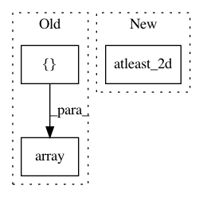

b5264000f20db429a3bd371ec66178c9fb49e5ce,Orange/distance/distance.py,SpearmanModel,compute_correlation,#SpearmanModel#Any#Any#,434
Before Change
def compute_correlation(self, x1, x2):
rho = stats.spearmanr(x1, x2, axis=self.axis)[0]
if isinstance(rho, np.float):
return np.array([[rho]])
slc = x1.shape[1 - self.axis]
return rho[:slc, slc:]
After Change
if np.isscalar(rho):
// scalar if n1 + n2 <= 2
assert n1 + n2 <= 2
return np.atleast_2d(rho)
else:
assert rho.shape == (n1 + n2, n1 + n2)
return rho[:n1, n1:].copy()
In pattern: SUPERPATTERN
Frequency: 4
Non-data size: 3
Instances
Project Name: biolab/orange3
Commit Name: b5264000f20db429a3bd371ec66178c9fb49e5ce
Time: 2018-01-16
Author: ales.erjavec@fri.uni-lj.si
File Name: Orange/distance/distance.py
Class Name: SpearmanModel
Method Name: compute_correlation
Project Name: scipy/scipy
Commit Name: 6d77b93fb1b7affff44e92312b36d7684bafaab0
Time: 2016-03-07
Author: gfyoung17@gmail.com
File Name: scipy/signal/ltisys.py
Class Name:
Method Name: tf2ss
Project Name: scikit-learn-contrib/DESlib
Commit Name: f0c15f219b0761b14329ddd416cda82fa4bae841
Time: 2018-03-28
Author: rafaelmenelau@gmail.com
File Name: deslib/dcs/mcb.py
Class Name: MCB
Method Name: estimate_competence
Project Name: PPPLDeepLearning/plasma-python
Commit Name: 3b379328f97b3a60c2f3519fef32523a58b69cf4
Time: 2017-12-13
Author: julian@vpn-client-141.pppl.gov
File Name: plasma/utils/downloading.py
Class Name:
Method Name: save_shot